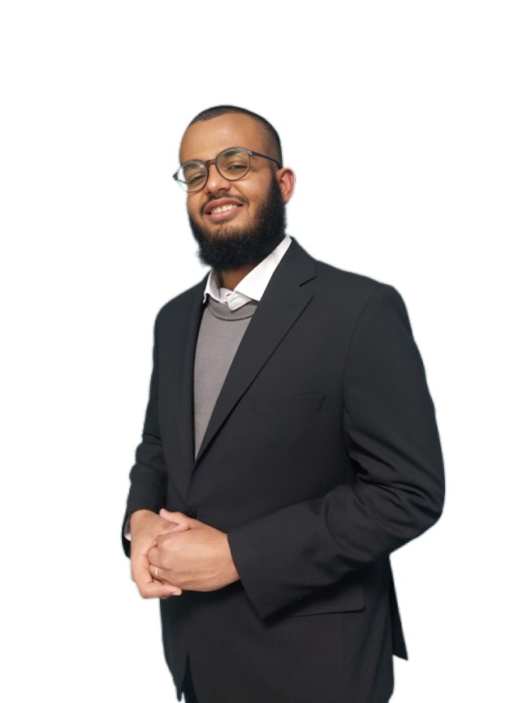

Gasim Elzamzamy
Ana Sayfa |
Özgeçmiş |
Projelerim |
Bana Ulaşın

Ben Gasim Elzamzamy Hassan Ahmed, teknoloji aracılığıyla sağlık hizmetlerini dönüştürme konusunda köklü bir tutkuya sahip bir Biyomedikal ve Bilgi Sistemleri Mühendisliği öğrencisiyim.
Yolculuğum, Afrika'nın en rekabetçi tıp fakültelerinden birine kabul edildiğim Hartum Üniversitesi Tıp Fakültesi'nde başladı. Zamanla klinik tıptan uzaklaşsam da, bu deneyim bende sağlık sorunlarını yalnızca tıbbi olarak değil, aynı zamanda politik, ekonomik ve sistemik inovasyon yoluyla da özünden çözmeye yönelik ömür boyu sürecek bir bağlılık duygusu uyandırdı.
Bugün, sağlık hizmetlerinin sunumunu yeniden tasarlamak için veri, otomasyon ve yapay zekâdan yararlanmaya odaklanıyorum. Derin öğrenme, tıbbi cihazlar ve tedarik zinciri otomasyonunu içeren etkili projeler üzerinde çalıştım ve her zaman sağlık hizmetlerini daha erişilebilir ve etkili hale getirmeyi hedefledim; özellikle de hizmet yetersizliği çeken topluluklarda.
Gücüm, disiplinler arası köprü kurmakta yatıyor: analitik düşünme, teknik uygulama ve insan merkezli tasarımı bir araya getirmek. Arapça, Türkçe ve İngilizce'ye akıcı bir şekilde hakimim ve sürekli öğrenebileceğim ve anlamlı katkılarda bulunabileceğim iş birlikçi, kültürlerarası ortamlarda başarılı oluyorum.
Dijital dönüşüm, sağlık sektöründe inovasyon veya teknoloji aracılığıyla daha iyi bir gelecek inşa etme konusunda tutkuluysanız, gelin bağlantı kuralım.